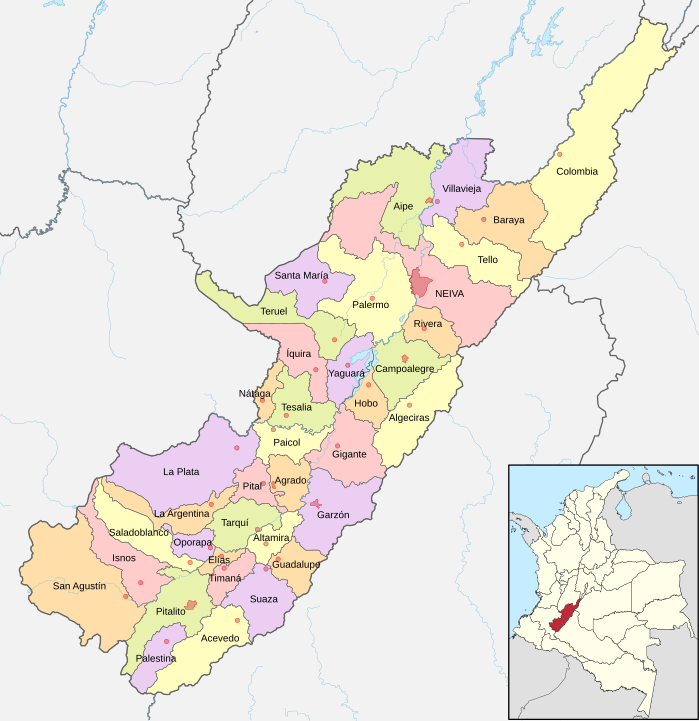

Huila
El departamento de Huila, en Colombia, se caracteriza por su diversidad geográfica, que incluye montañas, valles y ríos. Es conocido por su producción agrícola, especialmente café y caña de azúcar. La ciudad de Neiva, su capital, es un importante centro cultural y comercial. Huila también alberga sitios arqueológicos, como la famosa Ciudad Perdida de San Agustín, y cuenta con hermosos paisajes naturales, como el Parque Nacional Natural Puracé.

Costumbres
- Festival del Bambuco: Celebración cultural que resalta la música, danza y tradiciones del folclore huilense, con presentaciones artísticas y concursos.
- Semana Santa: Celebraciones religiosas que incluyen procesiones y representaciones de la Pasión de Cristo, muy arraigadas en la comunidad.
- Música tradicional: El bambuco y la música llanera son fundamentales en reuniones familiares y festividades, reflejando la identidad cultural de la región.
Comida típica
- Mute: Sopa típica que combina maíz, carne (generalmente de res o cerdo) y otros ingredientes, representativa de la cocina huilense.
- Arepa de maíz: Preparada con maíz fresco, es un acompañante habitual en las comidas y se puede servir con diferentes rellenos.
- Bocadillo de guayaba: Dulce típico hecho a base de guayaba, muy consumido como postre o merienda, y el ajiaco, que es una sopa a base de pollo, papas y maíz.
Actividad económica principal
- Ganadería: La cría de ganado, especialmente bovino, es una actividad económica importante, contribuyendo a la producción de carne y productos lácteos.
- Agricultura: Huila es uno de los principales productores de café de Colombia, conocido por su calidad. La producción de café es vital para la economía local.
- Cultivo de caña de azúcar y frutas: La región también se dedica al cultivo de caña de azúcar, que alimenta la industria de la panela y el aguardiente, además de frutas tropicales como el mango y la piña.
Población
- Huila tiene una población diversa, que mezcla herencias indígenas, afrodescendientes y mestizas. La capital, Neiva, es la ciudad más poblada y un centro de desarrollo regional. La población es conocida por su hospitalidad y sentido de comunidad.
Atrás